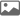

리스트 1
탭내용
리스트 2
2010-현재 진화와 변신 미래사업 영역 확대
-
2022
- 세계 최장비거리 기록, 아토맥스 골프공 개발
- 국내 최초 무충진 시스템 친환경 인조잔디 개발
-
2021
- 세계 최초 첨단 석유수지 기술개발, 양산
- 국내 최초 재활용 플라스틱원료사용한 PET 필름 개발
- 최초 주민 참여형 풍력발전단지 1단계 완공
-
2020
- 수입차 딜러 사업 확대 (아우디, 볼보, AS 사업 등)
- 항바이러스 섬유소재, 큐플러스 개발
- 수소차용 멤브레인 양산체제 구축
-
2019
- 코오롱인더스트리, CPI 세계 최초 양산 개시
- 국내 최초폴리이미드 필름 공장 준공
-
2018
-
2015
- 바스프 합작법인, 코오롱바스프이노폼 설립
- 팝업컨테이너 쇼핑몰 커먼그라운드 개장
-
2013
- 상해 중국지주사 설립
- 세계 최초 수소연료전지 수분제어장치 양산개발
-
2012
- 국내 최초 친환경패시브하우스 국제인증 획득
- 국내 최초 업사이클링 패션 브랜드 RE;CODE 론칭
-
2010